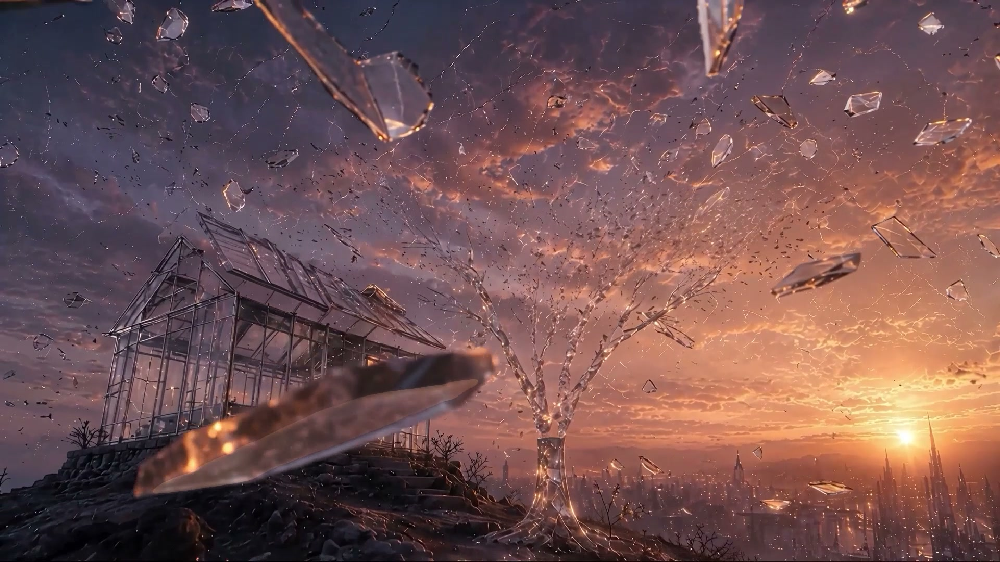

팔린드롬
Palindrome

LOGLINE
아내를 떠나보낸 노인의 가장 어두운 하룻밤. 그의 세계가 유리처럼 소리 없이 부서져 내리고, 마지막 남은 조각마저 손에서 떨어지는 순간 — 기억이 시간을 거꾸로 돌리기 시작한다. 잃어버린 모든 것의 자리마다, 그녀가 그것을 처음 건네주던 순간이 깨어난다.
THEME — 주제
"애도의 끝은 잊는 것이 아니라,
제대로 기억하는 것이다."
이 영화는 상실에 관한 영화이면서, 상실에서 끝나지 않는 영화다.
사랑하는 사람을 잃은 사람의 내부에서 세계는 실제로 무너진다 — 두 사람이 평생에 걸쳐 함께 지은 세계이기 때문이다. 거리도, 집도, 마당의 나무도, 식탁 위의 찻잔까지도 전부 그녀와 함께 쌓아 올린 것들이라서, 그녀가 떠나는 순간 그 모든 것에 금이 간다. 이 영화의 전반부는 그 내면 풍경을 그대로 보여준다. 종말처럼 보이지만, 종말이 아니다. 애도(哀悼)다.
그리고 이 영화가 믿는 것은 하나다. 그 부서진 세계를 다시 세우는 힘은 망각이 아니라 기억이라는 것. 슬픔의 밑바닥에서 기억은 시간을 거꾸로 걷기 시작한다 — 깨진 것들을 지나, 잃어버린 것들을 지나, 그 모든 것이 처음 도착하던 순간까지. 그 길을 끝까지 걸은 사람에게 상처는 사라지지 않는다. 대신 금으로 채워진다. 부서졌던 자리가 그 사람에게서 가장 빛나는 자리가 된다. 고통을 통과한다는 것은 원래대로 돌아가는 일이 아니라 더 깊은 사람이 되는 일 — 이 영화는 그것을 성장이라 부르고, 축복이라 부른다.
한 문장 소개
"아내를 먼저 보낸 할아버지의 하룻밤이에요. 그 사람 안에서 세계가 정말로 무너지는 걸 관객이 눈으로 봅니다 — 유리로 된 도시가 소리도 없이 다 부서져요. 그런데 마지막 조각이 바닥에 닿기 직전에 시간이 멈추고, 거꾸로 흐르기 시작합니다. 깨진 찻잔은 아내가 그 잔을 처음 건네주던 저녁으로 돌아가고, 부서진 나무는 두 사람이 함께 묘목을 심던 날로 돌아가요. 그리고 세계가 다시 설 때, 금 갔던 자리마다 진짜 금이 흘러요. 슬픔을 지우는 게 아니라 — 슬픔이 있던 자리를 가장 빛나는 곳으로 만드는 이야기입니다."
'잊음'이 아니라 '기억'이 사람을 일으킨다 — 이 영화의 위로는 그 순서 위에 서 있다.
WHY PALINDROME — 애도는 같은 길을 거꾸로 걷는 일이다
'팔린드롬'은 앞으로 읽으나 뒤로 읽으나 같은 말이다. 이 영화가 그 이름을 제목으로 삼은 이유는 형식이 대칭이어서가 아니다. 애도가 그렇게 생겼기 때문이다.
사랑하는 사람을 잃은 사람은 결국 같은 길을 두 번 걷는다. 처음에는 앞으로 — 진단, 병상, 이별, 장례, 텅 빈 집. 그리고 언젠가는 반드시 뒤로 — 텅 빈 집에서 출발해, 함께 웃던 저녁을 지나, 함께 나무를 심던 봄을 지나, 처음 만난 날까지. 앞으로 걷는 길의 이름은 상실이고, 뒤로 걷는 길의 이름은 추억이다. 두 길은 같은 길이다. 방향만 다르다.
문제는 대부분의 사람이 앞으로 걷는 길에서 멈춘다는 것이다. 되돌아 걷는 일은 아프기 때문이다 — 기억 하나하나가 전부 그 사람의 부재를 증언하니까. 그러나 이 영화는 그 길을 끝까지 걸으면 무엇이 나오는지 안다. 부재의 증거들은, 길을 끝까지 되짚은 사람에게 함께 있었음의 증거로 바뀐다. 깨진 잔의 끝에는 잔을 건네던 손이 있고, 쓰러진 나무의 끝에는 흙 위에서 만나던 두 손이 있다.
이 영화는 그 여정을 설명하지 않는다. 상영한다. 전반 30초 동안 관객은 한 사람의 세계가 무너지는 것을 보고, 후반 65초 동안 정확히 같은 세계를 거꾸로 걸어 올라간다. 그래서 이 영화에서 역재생은 기법이 아니라 애도의 초상이다.
왜 무성(無聲)인가 — 깊은 슬픔은 말을 잃는다
이 영화에는 대사도, 나레이션도, 효과음조차 없다. 형식적 실험이 아니다. 가장 깊은 슬픔은 언어 이전의 사건이기 때문이다. 사랑하는 사람을 잃은 첫날의 집을 기억하는 사람은 안다 — 그 시간은 말로 겪어지지 않는다. 위로의 말들은 유리벽 밖의 소리처럼 들리고, 자기 입에서 나오는 말조차 남의 것 같다. 그 시간을 정직하게 그리는 유일한 방법은 화면에서도 말을 걷어내는 것이었다. 이 영화에서 유일하게 끝까지 남아 있는 소리는 음악 — 즉 언어가 아닌 것 — 뿐이다. 그리고 그 음악은 처음부터 끝까지 한 번도 끊기지 않는다. 세계가 부서지고, 멈추고, 뒤집히는 동안에도. 말은 사라져도 끊기지 않는 것이 하나 있다는 것 — 그것이 이 영화에서 음악이 맡은 배역이다.
순수한 역재생이 아닌 이유 — 기억은 되감기가 아니다
후반부는 전반부의 단순한 되감기가 아니다. 되감기에는 없는 네 가지가 있고, 이 네 가지가 곧 기억과 재생(replay)의 차이다.
- ① 색이 따뜻해진다전반은 저채도 블루-바이올렛 황혼, 후반은 같은 화면이 점점 금빛으로 물든다. 같은 사건을 다시 지나는데 온도가 다르다 — 상실의 눈으로 본 과거와 감사의 눈으로 본 과거는 같은 과거가 아니기 때문이다. 기억은 사실을 저장하지 않는다. 온도를 저장한다.
- ② 킨츠기 금선은 후반에만 생긴다전반부의 균열은 그냥 균열이지만, 후반에 그 자리가 메워질 때는 금으로 메워진다. 원상복구가 아니다. 흉터를 감추지 않고 금으로 그려서 부서지기 전보다 아름답게 만드는 것 — 킨츠기(金継ぎ)다. 되감기라면 절대 나올 수 없는 이미지이며, 이 영화가 "회복"이 아니라 "성장"을 말한다는 물증이다.
- ③ 기억 두 장면이 새로 열린다'그녀의 자리'와 '함께 심던 날'은 전반부에 대응 컷이 없다. 시간을 되짚는 사람에게만 열리는 문이 있다 — 상실만 바라보던 눈에는 보이지 않던, 받았던 순간들이다. 애도가 감사로 바뀌는 바로 그 순간의 초상.
- ④ 세계가 좌우로 뒤집힌다힌지 이후 화면이 거울처럼 반전된다. 태양은 우측에서 좌측으로, 파편을 받는 손은 왼손에서 오른손으로. 기억 속에서 다시 걷는 길은 같은 길이되 거울에 비친 길이다 — 관객이 의식하지 못해도 몸이 먼저 안다, 여기부터는 세계를 다른 눈으로 보고 있다는 것을.
왜 AI로 만들어야 했는가
첫째, 이것은 내면의 풍경이다. 한 사람의 슬픔 안에서 도시가 부서지고 다시 서는 것 — 카메라를 들고 들어갈 수 있는 장소가 아니다. 물리적으로 존재한 적 없는 세계, 그러나 상실을 겪어본 사람이라면 누구나 가 본 세계.
둘째, 부서짐이 아름다워야 했다. 이 영화의 붕괴는 꽃이 피듯 일어나고, 파편은 아래가 아니라 위로 떠오른다. 잃는 것들이 아름답게 그려져야 하는 이유는 단순하다 — 아름다웠기 때문에 잃는 것이 아픈 것이다.
셋째, 얼굴을 아껴둘 수 있었다. AI 생성의 최대 약점은 인물의 얼굴이다. 이 작품은 그 약점을 연출 원칙으로 승격시켰다 — 노인의 얼굴은 95초 중 94초 동안 역광 실루엣이고, 마지막에 단 한 번 정면으로 열린다. 기술적 회피가 그대로 서사의 클라이맥스가 된 경우다.
"AI로 만들었다"는 사실 자체에는 변별력이 없다는 것을 알고 시작했다. 그래서 이 작품은 AI여야만 가능한 연출 — 존재한 적 없는 내면 세계, 중력을 거스르는 붕괴, 95초 전 구간의 유리 질감 일관성 — 으로 그 필연성을 증명하는 데 목표를 두었다.
STRUCTURE — 사랑이 먼저 있었고, 사랑이 남는다
이 영화의 감정 곡선은 문자 그대로 빛의 양이다 — 빛이 한 번 죽었다가, 두 배가 되어 돌아온다. 빛 한 점에서 시작해 상실을 지나 가장 어두운 밤에 닿고, 기억과 감사를 거쳐 다시 빛 한 점으로 돌아간다.
전반 30초 / 후반 65초. 이 비대칭은 의도다. 무너지는 것은 순식간이지만, 다시 일어서는 데는 그 두 배의 시간이 걸린다 — 애도의 실제 속도가 그렇다. 그리고 관객이 후반에 오래 머무를수록, 화면에 쌓이는 것은 붕괴의 기억이 아니라 받았던 것들의 목록이다.
컷의 배치가 곧 심리 지도다. 이 영화의 하드컷은 단 두 곳 — '그녀의 자리'가 끝나는 한 곳과, '자라나는 나무' 구간의 빠른 컷 연쇄뿐이다. 나머지 전 구간은 끊김 없는 디졸브 체인이며, 특히 클라이맥스 이후 마지막 41초에는 컷이 단 하나도 없다. 기억은 섬광처럼 튀어 들어오고, 세월은 박동치며 자라고, 치유는 끊기지 않고 흐른다. 편집 리듬 자체가 애도의 세 가지 시간을 연기한다.
SCENES — 빛 한 점에서 빛 한 점으로
처음과 끝이 같은 글자
어둠 위에 《팔린드롬 Palindrome》 — 그리고 영화의 맨 끝, 크레딧 직전에 정확히 같은 타이틀이 다시 놓인다. 콜드 오픈 대신 앞뒤 동일 타이틀을 택한 이유는 하나다: 팔린드롬은 앞으로 읽으나 뒤로 읽으나 같은 말이고, 이 영화는 제목부터 그 규칙을 지킨다. 처음과 끝이 같다는 것 — 관객이 영화를 다 본 뒤에야, 같은 글자가 다른 뜻이 되어 있다.
빛 한 점
완전한 어둠. 그 중앙에 아주 작은 황금빛 한 점.
영화는 세계가 아니라 빛에서 시작한다. 도시도, 집도, 그녀도, 그도 아직 없다. 관객은 이 2.5초를 오프닝 장식으로 흘려보내지만 — 95초 뒤 정확히 같은 화면으로 돌아와서야 알게 된다. 이것은 장식이 아니라 이 세계의 처음에 놓여 있던 것이었다. 두 사람의 사랑이 시작되기도 전에, 사랑 그 자체가 먼저 있었다.
창세기 1장 — 세계의 첫 문장이 빛인 것. 이 영화도 같은 문장으로 시작한다.
제1부 · 상실 — "세계는 안에서부터 무너진다"

황혼의 방
어둠에서 실내가 떠오른다. 커다란 창, 낮게 걸린 태양. 창가에 노인이 등을 보이고 서 있다. 식탁 위에는 유리 찻잔이 두 개 놓여 있다.
이 2초에 영화의 모든 정보가 있다. 잔은 둘인데, 사람은 하나다. 그녀가 떠난 뒤에도 그는 여전히 잔을 두 개 꺼낸다 — 수십 년의 사랑이 손에 남긴 습관은 죽음보다 오래간다. 이 두 개의 잔은 그가 아직 애도의 어디쯤에 서 있는지 보여주는 좌표다: 머리는 알지만, 손은 아직 모른다.
그는 등을 보이고 있다. 이 영화에서 그의 얼굴은 83초 동안 금지된다 — 마지막 한 번을 위해서다. 그리고 이 창은 클라이맥스에서 정확히 같은 자리에 다시 선다.
프루스트 《잃어버린 시간을 찾아서》 — 홍차에 적신 마들렌 한 조각이 잃어버린 세계 전체를 되살리듯, 기억은 사물 속에 잠들어 있다. 이 영화의 마들렌은 유리 찻잔이다.

첫 균열
유리 도시의 발치에서 하늘을 올려다본다. 벌집 모양으로 짜인 유리 하늘. 그 한 점에서 거미줄 균열이 소리 없이 사방으로 번진다.
상실은 사이렌을 울리며 오지 않는다. 장례가 끝나고, 사람들이 돌아가고, 일상이 계속되는 척하는 어느 순간 — 아무 소리 없이, 세계에 금이 가 있다. 슬픔의 첫 형태는 통곡이 아니라 이 고요한 균열이다.
하늘을 벌집형 유리 패널로 설계한 이유는 하나다 — 이 이음매 선들이 나중에 킨츠기 금선이 놓일 자리이기 때문이다. 흉터가 생길 자리는 이미 세계의 구조 안에 있었고, 빛나게 될 자리도 같은 자리다.
C.S. 루이스 《헤아려 본 슬픔》 — 아내를 잃은 첫 페이지의 고백, "슬픔이 이렇게 두려움과 비슷한 느낌인 줄 아무도 말해주지 않았다." 세계가 낯설어지는 감각으로서의 슬픔.
뻗는 손
창가. 노인이 창밖으로 손을 뻗는다. 유리 조각이 손끝을 스치며 위로 빠져나간다.
붙잡으려는 첫 시도, 그리고 첫 실패. 사별한 사람의 손은 오랫동안 이 동작을 반복한다 — 전화기를 들다가, 잠결에 옆자리를 더듬다가. 뻗는 순간 이미 늦어 있는 손.
오르페우스와 에우리디케 — 돌아보는 순간 사라지는 사랑. 신화가 알고 있던 것: 상실 직후의 사랑은 아직 붙잡는 법밖에 모른다. 이 손이 받는 법을 배우는 것이 이 영화의 후반부다.
개화하는 거리
유리 도시가 부감으로 펼쳐진다. 거리가 조각조각 열리며 떠오르기 시작한다.
붕괴가 꽃잎이 열리듯 일어난다. 이 영화는 잃어버리는 것들을 아름답게 그리는 일을 두려워하지 않는다 — 아름다웠기 때문에 잃는 것이 이토록 아픈 것이다. 추함이 부서질 때 우리는 울지 않는다.
파편은 아래로 떨어지지 않고 위로 떠오른다. 관객은 이유 모를 위화감을 느끼며 전반부를 통과하는데, 답은 힌지에서 나온다 — 이 세계는 처음부터 돌아갈 준비가 되어 있었다.
릴케 《두이노의 비가》 — 아름다움을 "우리가 간신히 견디는 두려움의 시작"이라 부른 시인. 전반부의 미학 전체가 이 한 줄 위에 서 있다.

붕괴의 절정
카메라가 부유하는 유리 폭풍 한가운데를 수직으로 상승한다. 집이 해체되고, 마당의 유리 나무가 흩어지고, 파편 구름이 하늘을 채운다. 태양빛이 갓레이로 쏟아진다. 노인은 저 아래 점처럼 작다.
전반부의 빛이 가장 밝은 지점이다. 상실의 순간은 실제로 이렇게 온다. 압도적이고, 거대하고, 잔인하게 눈부시다. 세상은 그 어느 때보다 환한데, 그 안의 사람만 점처럼 작다. 남들의 세계는 멀쩡히 빛나는데 나의 세계만 무너지는 것 — 사별의 가장 외로운 물리학.
파편은 동시에 상승하지 않는다. 어떤 것은 망설이고, 어떤 것은 천천히 회전한다. 균일하면 CG가 되고, 제각각이어야 꽃이 된다.
욥기 1장 — 하루아침에 모든 것을 잃는 사람의 원형. 이 장면이 욥의 첫 장이라면, 이 영화의 코다는 욥의 마지막 장이다.
두 찻잔, 그리고 하나의 균열
사방이 무너지는 한가운데, 카메라가 식탁 위로 내려온다. 유리 찻잔 두 개. 그중 하나에 금이 간다.
이 영화에서 가장 작고 가장 큰 사건. 도시가 통째로 무너지는 스펙터클 다음에 카메라는 찻잔 하나를 보러 내려온다 — 그것이 슬픔의 축척이다. 세계가 무너지는 것보다 잔 하나 깨지는 게 더 큰 일인 사람이 있다. 깨지는 것은 그녀의 잔이다. 영화는 그녀가 누구인지 설명하지 않는다. 잔 하나를 깨뜨릴 뿐이다.
픽사 《업》의 오프닝 몽타주 — 한 부부의 평생과 사별을 대사 한 줄 없이 사물들로만 말하는 4분. 사랑의 크기를 물건의 침묵으로 재는 화법.
어두운 홀
넓은 홀. 태양이 수평선 아래로 진다. 방의 빛이 꺼진다. 노인이 홀로 서 있다.
조문객이 모두 돌아간 저녁의 집. 사별한 사람들이 입을 모아 말하는 그 시간 — 집이 갑자기 너무 커지는 시간이다. 같은 평수, 같은 가구인데, 한 사람이 빠져나간 자리만큼이 아니라 세계 전체만큼 비어 버린다.
에밀리 디킨슨 — "커다란 고통 뒤에는, 형식적인 감정이 온다"로 시작하는 시. 통곡이 아니라 거대한 정적이 고통의 다음 순서라는 것을 안 시인.
손바닥의 마지막 파편
노인의 손바닥 위에 유리 파편 하나가 남아 있다. 그것만이 빛난다.
세계 전체가 사라지고 남은 것 하나 — 기억 한 조각. 상실의 끝에서 사람이 실제로 쥐고 있는 것은 언제나 이만한 크기다. 사진 한 장, 목소리 한 토막, 손버릇 하나. 너무 작아서, 이것마저 놓아버리고 싶어지는 크기.
낙하
파편이 손을 떠나 아래로 떨어진다. 카메라가 따라 내려간다. 바닥이 다가온다.
애도의 가장 위험한 순간은 눈물이 아니라 이 순간이다 — 기억마저 놓아버리는 순간. 아픈 것은 기억 때문이니, 기억을 버리면 아프지 않을 것이라는 유혹. 관객은 파편이 바닥에 닿아 산산이 부서지는 것을 볼 준비를 한다. 이 영화는 그 예상 위에서 작동한다.
힌지 — 가장 어두운 밤
정지, 그리고 완전한 어둠
영화 전체의 가장 어두운 지점. 화면이 검다. 소리도 없다. 그러나 파편은 바닥에 닿지 않았다. 공중에 멈춰 있다.
이 영화의 유일한 문턱. 슬픔의 밑바닥에는 바닥이 있다 — 그리고 그 바닥에서 아무 일도 일어나지 않는 1초, 그것이 사건이다. 기억은 부서지지 않았다. 멈췄을 뿐이다. 어둠은 끝이 아니라 방향이 바뀌는 자리였다.
화면은 멈췄지만 음악은 끊기지 않는다 — 그리고 실은, 음악의 거울 축은 이 힌지보다 약 3초 앞에 놓여 있다. 파편이 아직 떨어지고 있을 때 소리는 이미 방향을 돌려 정방향으로 흐르고 있고, 세계가 그 뒤를 따라 돈다. 회복은 눈에 보이기 전에 먼저 들린다. 그리고 이 어둠은 첫 프레임의 어둠, 마지막 프레임의 어둠과 같은 밝기다 — 세 개의 어둠이 같은 어둠이라는 것, 그것이 이 영화의 구조적 고백이다.
십자가의 성 요한 《영혼의 어두운 밤》 — 가장 깊은 어둠은 버림받음이 아니라 통과의 한 구간이라는 것. 밤은 견디는 자에게만 새벽의 일부다.
제2부 · 기억 — "시간을 거꾸로 걷는 사랑"
여기서부터 화면이 좌우로 뒤집힌다. 태양은 좌측으로 옮겨가고, 파편을 받는 손은 오른손이 된다. 그리고 색이 서서히 금빛으로 물들기 시작한다. 애도의 후반부가 시작된다 — 같은 길을, 거꾸로, 다른 눈으로.
역류
멈춰 있던 파편이 위로 되오르기 시작한다. 노인의 손바닥을 향해.
놓아버린 기억이 스스로 돌아온다. 애도를 지나본 사람은 이 순간을 안다 — 잊으려고 애쓰던 어느 날, 기억이 문득 아프지 않은 얼굴로 돌아오는 순간. 떨어지는 것과 돌아오는 것은 같은 궤적이다.
커트 보니것 《제5도살장》 — 전쟁 영화를 거꾸로 트는 유명한 대목. 폭격기가 화염을 빨아들이고, 포탄이 회수되어 해체되고, 광물이 되어 땅속으로 — 다시는 누구도 해치지 못할 곳으로 — 돌아간다. 파괴의 필름을 거꾸로 돌리면 치유가 된다는 것을 문학이 먼저 알고 있었다.
되빚어지는 찻잔
흩어진 파편들이 공중에서 모여든다. 금이 사라지고, 찻잔이 온전해져 두 개가 나란히 식탁에 놓인다.
기억이 가장 먼저 되돌리는 것은 가장 큰 것이 아니라 가장 작은 것이다 — 애도의 실제 순서다. 사별한 사람이 처음 웃으며 떠올리게 되는 것은 인생의 대사건이 아니라 찻잔 하나, 말버릇 하나다. 그리고 온전해진 잔은 관객에게 질문 하나를 남긴다: 그럼 이 잔은, 원래 어디서 왔지?

그녀의 자리
노인의 어깨 너머, 온전해진 두 찻잔 너머. 식탁 건너편 빈 의자에 따뜻한 금빛 온기가 어린다. 얼굴 없는 실루엣. 그리고 잔 하나를 건네는 손.
이 영화의 첫 번째 심장. 앞에서 "깨진 잔 = 그녀의 부재"였던 것이, 여기서 "그녀가 그 잔을 처음 건네주던 저녁"으로 뒤집힌다. 같은 사물, 정반대의 의미. 시간을 끝까지 되짚은 사람에게만 열리는 문이 이것이다 — 상실의 증거들이 하나씩, 사랑받았음의 증거로 돌아서는 것. 그리움이 이토록 아픈 이유는 단 하나, 그 사랑이 진짜였기 때문이다.
그녀에게 얼굴을 주지 않았다. 온기와 손짓만 있다. 얼굴이 있으면 그녀는 특정한 한 사람이 되고, 없으면 관객 각자가 잃은 그 사람이 된다. 기억 속의 사람은 얼굴로 오지 않는다 — 온기로 온다. 그리고 이 장면이 끝나는 자리에 이 영화의 유일한 단독 하드컷이 놓여 있다: 기억은 디졸브로 스며들지 않고, 섬광처럼 왔다가 섬광처럼 끊긴다.
손턴 와일더 《우리 읍내》 — 죽은 에밀리가 허락받아 되돌아가는 가장 평범했던 하루. 그리고 그 하루가 너무 눈부셔서 견디지 못하는 장면. 산 사람은 삶이 얼마나 큰 선물인지 모른 채 산다는 것 — 되돌아간 자만이 평범한 저녁의 값을 안다.
하늘로, 집으로
파편들이 하늘로 역류한다. 흩어졌던 집이 오므라들며 다시 지어진다.
블룸 라이즈의 거울. 같은 파편, 같은 궤적, 반대 방향. 관객은 조금 전에 본 것을 다시 보고 있다는 것을 안다 — 그때 아프도록 아름다웠던 것이, 지금은 그냥 따뜻하다. 같은 기억이 두 번째 지나갈 때 덜 아픈 것, 그것이 치유가 몸에 오는 방식이다.
자라나는 나무
유리 조각들이 땅에서 모여들며 나무가 솟아 자란다. 가지가 뻗고, 잎이 열리고, 거대한 크리스털 나무가 하늘을 채운다 — 빠른 컷 일곱 개의 연쇄로.
부서진 것 중 가장 큰 것이 돌아온다. 집보다, 도시보다 먼저 — 이 세계에서 무엇이 가장 중요했는지 회복의 순서가 말해준다. 그리고 이 구간만 유일하게 빠른 컷의 연쇄다: 디졸브의 강물 속에서 여기만 박동친다. 나무가 자라는 것이 아니라 세월이 자라는 것이기 때문이다 — 신혼의 봄, 아이 같던 여름, 무성하던 한낮의 년월들이 심장 뛰듯 지나간다.

함께 심던 날
완성된 유리 나무의 밑동. 그 옆에 두 개의 금빛 실루엣이 나란히 무릎을 꿇고 있다. 손과 손이 흙 위에서 만난다. 그들 사이에 아주 작은 묘목 하나. 화면 한쪽에는 다 자란 나무가 이미 서 있다.
이 영화의 두 번째 심장. 관객은 지금껏 이 나무를 "부서졌다 복원된 것"으로 보고 있었다. 그런데 기억이 조금 더 거슬러 올라가자 드러난다 — 이 나무는 복원된 게 아니라, 두 사람이 함께 심은 것이다. 잃어버린 것을 되찾는 이야기가 아니라, 애초에 함께 시작했었음을 발견하는 이야기. 영화는 그에게 그녀를 돌려주지 않는다. 대신 함께였다는 사실을 돌려준다 — 그리고 그것은 이미 일어난 일이어서, 죽음도 빼앗을 수 없다.
묘목과 다 자란 나무가 한 프레임에 있다 — 과거와 현재가 겹쳐 보이는 것은 기억 속에서만 가능한 광학이다. 두 사람 모두 얼굴이 없고, 빛으로만 되어 있다.
장 지오노 《나무를 심은 사람》 — 심는 행위는 언제나 자기보다 오래 살 것을 위한 일, 곧 희망의 형식이라는 것. 두 사람이 심은 것은 나무가 아니라 함께할 시간이었다.
도시 재건
부유하던 거리 조각들이 오므라들며 도시가 재건된다. 스카이라인이 복원된다. 하늘의 균열만 아직 남아 있다.
세계가 돌아온다. 그러나 흉터는 아직 그대로다. 이 순서가 정확하다 — 삶이 먼저 복구되고, 흉터를 어떻게 할 것인가는 그다음의 일이다. 치유는 흉터 제거가 아니다. 흉터와 함께 사는 법의 발명이다.

킨츠기 — 흉터가 금이 되는 시간
하늘의 균열이 카메라의 진행을 따라 하나씩 금빛으로 채워진다. 금선이 하늘을 가로지르고, 도시로 내려오고, 세계 전체가 금빛 그물로 이어진다.
이 영화의 세 번째 심장이자, 주제의 이름. 킨츠기(金継ぎ)는 깨진 도자기를 금으로 이어 붙이는 일본의 수리 철학이다. 핵심은 흉터를 감추지 않는다는 것 — 오히려 금으로 그려 드러내고, 그 결과 그릇은 깨지기 전보다 아름다워진다. 이 영화가 "회복"이 아니라 "성장"을 말하는 지점이 여기다. 그는 아내를 잃기 전의 자신으로 돌아가지 않는다. 더 깊어진 사람이 된다. 금선이 그어질 수 있는 자리는 금이 갔던 자리뿐이다 — 고통이 지나간 자리만이, 그 사람에게서 가장 빛나는 자리가 될 수 있다. 그래서 이 영화는 고통의 극복을 감히 축복이라 부른다.
첫 균열이 벌집 이음매를 따라 번졌던 것을 기억할 것 — 그 이음매가 처음부터 금선이 놓일 자리였다. 부서짐의 구조와 아름다워짐의 구조는 같은 선 위에 있다.
헤밍웨이 《무기여 잘 있거라》 — "세상은 모든 사람을 부순다. 그러나 많은 이들이 그 부서진 자리에서 강해진다." 킨츠기의 서양식 문장.
떠오르는 태양
금빛으로 이어진 도시 위. 노인의 실루엣이 서 있다. 태양이 화면 좌측에서 떠오른다.
전반부에서 우측으로 졌던 태양이 좌측에서 떠오른다. 밤이 끝났다는 가장 오래된 신호. 세계 전체가 그의 뒤에 있고, 그는 처음으로 빛을 마주 본다 — 등지고 있던 것을 마주 보는 것, 애도의 마지막 동작이다.
시편 30편 — "저녁에는 울음이 깃들일지라도, 아침에는 기쁨이 오리로다." 이 영화의 시간 구조를 삼천 년 전에 요약해 둔 문장.
얼굴 해금
카메라가 그에게 다가간다. 빛이 옆으로 돌아 그의 얼굴에 처음으로 닿는다. 실루엣이 풀린다. 주름, 백발, 수염 — 그의 얼굴이 처음으로 보인다.
78초를 기다린 얼굴. 관객은 이 사람이 누구인지 모른 채 그를 따라왔다 — 등만 보고, 손만 보고, 그가 잃는 것을 다 보고, 그가 받았던 것을 다 본 다음에야 얼굴을 본다. 이 순서가 이 영화의 예의다. 슬픔의 한가운데 있는 사람의 얼굴을 우리는 함부로 들여다보지 않는다. 얼굴은 그 사람이 빛을 마주 볼 준비가 되었을 때, 스스로 열린다.
렘브란트의 만년 자화상들 — 파산과 사별을 다 지나온 얼굴에 어리는, 젊은 날에는 없던 빛. 고통을 통과한 얼굴만이 가질 수 있는 광원.

정면, 그리고 미소
영화 전체에서 빛이 가장 밝은 지점. 그가 창 앞에 정면으로 서 있다. 등 뒤로 금빛 세계가 만개하고, 유리 파편들이 빛의 입자가 되어 흩날린다. 그리고 그의 얼굴에 — 미소.
이 영화의 도착점. 오프닝과 정확히 같은 창이다. 그때 그는 등을 보이고 있었고 창밖에서 세계가 무너지기 시작했다. 지금 그는 정면으로 서 있고 창밖에서 세계가 빛으로 만개한다. 같은 사람, 같은 창, 같은 빛 — 바뀐 것은 그가 서 있는 방향뿐이다. 그의 인생에서 취소된 사건은 하나도 없다. 잔은 깨졌었고, 그녀는 떠났고, 세계는 무너졌었다. 그런데 그 모든 기억을 끝까지 되짚어 걸은 그에게, 이제 그것들은 전부 받았던 순간들로 다시 놓여 있다. 그래서 이 미소는 망각의 미소가 아니다. 가장 잘 기억하는 사람의 미소다.
영화 전체에서 유일한 아이레벨 정면. 95초 동안 로우·하이·더치로 기울어 있던 카메라가 여기서 단 한 번 수평이 된다. 그가 처음 화면 중앙에 서는 순간, 관객의 눈높이도 처음으로 그와 나란해진다. 그리고 소리 — 음악은 이 순간을 향해 커지는 대신 숨을 거두어들인다. 미소 직후 음악은 이 영화에서 가장 낮은 곳까지 내려간다. 빛의 최고점과 소리의 최저점이 같은 자리에 놓인다 — 경외에는 소리가 없다. 그리고 그 정적에서, 원곡의 첫 소절이 다시 태어난다.
칼릴 지브란 《예언자》 — 슬픔이 존재를 깊이 파낼수록 그 자리에 더 많은 기쁨이 담긴다는 것. 기쁨과 슬픔은 같은 우물에서 길어 올려진다.
코다 — 축복, 흉터가 빛나는 세계
임파서블 풀백
카메라가 물러난다. 그의 집이 보이고, 언덕이 보이고, 유리 도시 전체가 보이고 — 계속 물러나면 하늘 전체가 금선으로 이어진 거대한 돔임이 드러난다. 그의 세계 전부가 한 프레임에 들어온다.
축척의 계시. 한 사람의 인생을 이만큼 멀리서 보면 이렇게 생겼다 — 금이 갔던 자리마다 금선이 흐르는, 하나의 그릇. 가까이서는 상처였던 것들이 멀리서는 무늬다. 부서졌던 곳이 하나도 빠짐없이, 하나도 헛되지 않게, 빛의 지도가 되어 있다.
방 안의 클로즈업에서 행성 규모의 부감까지 컷 없이 물러난다 — 물리 카메라로는 불가능한 스케일 연속 이동. 마지막 41초 무편집 연속체의 등뼈다.
그리고 음악. 미소 직후의 정적에서, 원곡이 처음부터 다시 흐르기 시작한다. 이미지가 시작의 빛 한 점을 향해 돌아가는 동안 음악도 자기 시작으로 돌아간다 — 그러나 이것은 반복이 아니라 새로운 출발이다. 상실을 통과해 회복한 한 인간이, 같은 인생의 악보를 처음부터 다시 연주하기 시작하는 소리. 팔린드롬은 닫힌 원이 아니라 나선이다 — 같은 자리로 돌아오지만, 같은 사람이 아니다.
욥기 42장 — 모든 것을 잃었던 사람의 말년이 처음보다 더 크게 복된 것. 블룸 라이즈(욥기 1장)에서 시작한 괄호가 여기서 닫힌다. 고통의 극복이 축복이 되는 서사의 원전.
빛 한 점, 다시
세계가 계속 축소된다. 도시가 점이 되고, 빛이 점이 되고 — 어둠 한가운데 작은 황금빛 한 점만 남는다.
영화가 시작한 그 화면이다. 시작한 자리로 정확히 돌아왔다. 그리고 이제 관객은 그 첫 프레임이 무엇이었는지 안다 — 도시보다, 집보다, 나무보다, 그녀보다, 그보다 먼저 있었던 것. 기억을 끝까지, 끝까지 거슬러 올라가면 마지막에 남는 것은 상실이 아니다. 처음의 사랑이다. 모든 것이 거기서 왔고, 모든 것이 거기로 돌아간다.
단테 《신곡》의 마지막 행 — 지옥과 연옥을 다 통과한 순례자가 마지막에 보는 것은 "해와 다른 별들을 움직이는 사랑"이다. 가장 긴 어둠의 여정이 도착하는 곳이 빛이라는 것.
세 번째 어둠
빛 한 점이 서서히 잦아든다.
첫 프레임의 어둠, 힌지의 어둠, 그리고 이 어둠 — 셋은 물리적으로 같은 어둠이다. 그러나 관객에게 마지막 어둠은 더 이상 처음의 어둠이 아니다. 아무것도 없는 어둠이 아니라, 방금 빛이 놓이는 것을 본 어둠이다. 상실을 겪을 모든 관객에게 이 영화가 남기는 마지막 이미지가 이것이다: 어둠은 같은 어둠이어도, 그것을 지나온 사람은 같은 사람이 아니다.
두 장의 카드, 그리고 같은 타이틀
빛이 잦아든 어둠 위로 이 영화의 마지막 말들이 차례로 놓인다.
카드 ① — "잃은 것은 없었다 / 모든 것은 처음의 선물로 돌아가고 있었다." 과거형의 내레이션이 노인의 세계를 닫는다. 방금 꺼진 빛 위에 이 문장이 놓일 때, 화면과 자막이 한 문장이 된다.
카드 ② — "사랑은 사라지지 않는다 / 기억이라는 빛으로 남아 우리를 다시 살게 한다." 카드 ①이 과거형으로 이야기를 닫았다면, 카드 ②는 현재형으로 화면 밖의 관객에게 건너간다. 방금 꺼진 그 빛이 무엇이었는지를 이 문장이 명명한다.
엔드 타이틀 — 오프닝과 정확히 같은 《팔린드롬》 타이틀이 다시 놓인다. 영화의 처음과 끝이 같은 글자. 다만 이제 관객에게 그 글자는 처음과 같은 뜻이 아니다. 그리고 이 모든 카드와 크레딧 아래로, 다시 시작된 원곡이 끊기지 않고 흐른다. 새 출발의 노래가 관객을 극장 밖까지 배웅한다.
VISUAL — 비주얼 설계, 네 개의 관통 원리
95초 안에 도시·집·나무·찻잔·기억·행성 규모를 통과하면서도 "한 편"으로 읽히는 것은 전 구간에 강제된 네 개의 접착제 덕분이다.
1. 세계는 유리다 — 기억의 물성
도시도, 집도, 나무도, 하늘도, 찻잔도 전부 반투명한 유리·도자다. 유리를 고른 이유는 유리가 기억과 같은 물성을 가졌기 때문이다.
- 빛을 담는다기억은 사실이 아니라 그때의 빛으로 저장된다.
- 깨지기 쉽다그리고 한 번 깨지면 원래대로는 돌아가지 않는다.
- 금으로 이을 수 있다깨졌던 것만이 킨츠기가 될 수 있다.
아우구스티누스는 기억을 "넓은 들판과 궁전"이라 불렀다 — 이 영화의 유리 도시는 문자 그대로 그 궁전이다. 한 사람이 평생 사랑하며 지은 기억의 건축. 그래서 그녀가 떠날 때 도시 전체가 흔들리는 것이다.
2. 빛은 한 번도 화면을 떠나지 않는다
전반부가 어둡다고 해서 어두운 화면이 되는 것을 금지했다. 전 구간에 실존하는 태양, 구름의 노을 그라데이션, 유리의 빛 반응이 반드시 있다. 세계가 가장 무너진 순간에도 태양은 화면 안에 있다.
이것이 이 영화가 슬픔을 그리는 방식이다. 슬픔의 한가운데서 빛은 사라진 것이 아니라 등 뒤에 있다. 잃어버린 사람의 사랑도 그렇다 — 떠난 것이 아니라, 돌아볼 때까지 등 뒤에서 기다린다. 카메라가 마지막에 하는 일은 그를 돌려세우는 것뿐이다.
3. 색은 기억의 온도다
전반은 저채도 블루-바이올렛 황혼, 후반은 같은 화면이 점진적으로 앰버-금으로 물든다. 사건은 같은데 온도가 다르다 — 상실의 눈으로 본 과거와 감사의 눈으로 본 과거는 같은 장면이어도 같은 색이 아니기 때문이다. 관객은 힌지에서 시간이 뒤집힌 것을 이미지로 알지만, 그것이 치유의 방향이라는 것은 색으로 안다.
4. 공간축 거울 — 기억은 거울에 비친 길이다
힌지에서 세계가 뒤집히는 순간 좌우도 거울처럼 반전된다: 태양 우→좌, 진입 방향 좌→우, 노인의 손 왼손→오른손. 시간의 반전이 신체에까지 새겨진다.
이 장치의 기원은 밝혀둘 만하다. 생성 과정에서 모델이 미러 구도에서 자꾸 반대쪽 손을 내는 경향이 있었고, 그것을 오류로 잡는 대신 규칙으로 승격시켰다. 도구의 습성을 연출 문법으로 번역한 사례다.
렌즈 · 앵글 문법
- 아이레벨 정면 = 배제가 아니라 유보95초 중 94초를 로우·하이·더치로 기울여 놓고, 클라이맥스에서 단 한 번 수평·정면·중앙을 준다. 83초 만에 처음 주는 화각이 무기가 된다.
- 넓게, 그리고 좁게초광각 웜즈아이는 붕괴·스펙터클 구간에. 망원 매크로와 얕은 심도는 찻잔·손·파편 구간에. 세계는 넓게, 사람의 것은 좁게.
- 3층 구성전경(찻잔·파편·손) / 중경(집·나무·인물) / 후경(도시·태양)을 상시 유지.
레퍼런스 운용 원칙
이 작품의 레퍼런스는 영화가 아니라 주로 문학이다 — 프루스트, C.S. 루이스, 디킨슨, 릴케, 보니것, 와일더, 지오노, 헤밍웨이, 지브란, 단테, 욥기, 시편, 오르페우스 신화, 그리고 킨츠기의 수리 철학. 상실과 회복에 관한 인류의 가장 오래된 문장들에서 정서의 좌표만 빌려오되, 이미지·구도·장면은 전부 이 세계(유리·빛·팔린드롬)의 언어로 새로 지었다. 인용이 아니라 계승이다 — 문학이 말로 도달한 자리에, 무성영화의 이미지로 다시 도달하는 것이 목표였다.
SYMBOLS — 상징 사전
- 두 개의 찻잔이 영화의 심장. 그녀가 떠난 뒤에도 그는 잔을 두 개 꺼낸다 — 사랑이 손에 남긴 습관은 죽음보다 오래간다. 하나가 깨지는 것이 전반부의 사건이고, 그 잔이 그녀가 건네준 것이었음이 후반부의 계시다. 이 영화의 마들렌 — 기억이 잠들어 있는 사물.
- 손전반에서는 붙잡으려다 놓치는 기관(오르페우스의 손), 후반에서는 받는 기관. 힌지에서 왼손이 오른손이 된다 — 애도의 전환이 신체에 새겨진 자리.
- 마지막 파편상실 뒤에 남는 기억 한 조각. 너무 작아서 이것마저 버리고 싶어지는 크기 — 그러나 회복은 정확히 이 한 조각에서 시작된다. 기억을 버리지 않은 사람에게만 후반부가 온다.
- 킨츠기 금선이 영화의 주제. 흉터를 감추지 않고 금으로 그려 부서지기 전보다 아름답게 만드는 것. 금선이 그어질 수 있는 자리는 금이 갔던 자리뿐 — 고통이 지나간 자리만이 가장 빛나는 자리가 될 수 있다는, 성장과 축복의 논리.
- 벌집형 유리 하늘부서질 자리와 금이 그어질 자리가 같은 선이라는 설계. 상처의 구조와 아름다움의 구조는 처음부터 한 몸이다.
- 유리 나무두 사람이 함께 심은 세월. 부서진 것 중 가장 큰 것이면서, 기억을 거슬러 오르면 복원된 것이 아니라 함께 시작한 것. 죽음이 빼앗을 수 없는 과거완료의 사랑.
- 태양 (우→좌)시간의 나침반이자 이 영화의 숨은 주인공. 전반에 지고 후반에 뜬다. "저녁에는 울음이, 아침에는 기쁨이"의 광학 번역 — 그리고 모든 것이 사라진 마지막에 혼자 남는다.
- 빛 한 점 (첫 프레임 = 마지막 프레임)기억을 끝까지 거슬러 오르면 마지막에 남는 것. 상실이 아니라 처음의 사랑. 세계보다 먼저 있었고 세계보다 나중까지 있는 것 — 영화가 말로 하지 않고 구조로만 두는 층위.
- 세 개의 어둠같은 밝기의 세 어둠 — 시작의 어둠, 밑바닥의 어둠, 끝의 어둠. 물리적으로 같지만, 지나온 사람에게는 다르다. 마지막 어둠은 곧 빛이 놓일 어둠이다.
- 얼굴 없는 온기그녀에게 얼굴이 없는 이유. 얼굴이 있으면 특정한 한 사람이 되고, 없으면 관객 각자가 잃은 그 사람이 된다. 기억 속의 사람은 얼굴이 아니라 온기로 온다.
- 역광 실루엣 (94초)슬픔의 한가운데 있는 사람의 얼굴을 함부로 들여다보지 않는 예의. 얼굴은 그가 빛을 마주 볼 준비가 되었을 때 스스로 열린다 — 그리고 그때의 표정은 반드시 미소다.
- 창오프닝의 뒷모습과 클라이맥스의 정면이 선 같은 자리. 인생은 바뀌지 않았고, 서 있는 방향이 바뀌었다는 것의 물리적 증명.
- 단 하나의 하드컷디졸브의 강물 속에 박힌 유일한 단독 하드컷 — '그녀의 자리'가 끝나는 자리. 기억은 스며드는 것이 아니라 섬광처럼 왔다가 끊긴다.
- 다시 시작되는 첫 소절코다에서 원곡의 처음이 되돌아온다. 반복이 아니라 새 출발 — 회복한 인간이 같은 인생의 악보를 처음부터 다시 연주하기 시작하는 소리. 영화는 끝나지만 곡은 이제 막 시작되었다.
CHARACTER — 얼굴을 94초 동안 아껴두다
주인공은 70대의 마른 유럽 귀족풍 노인이다. 은백의 스웹백 헤어와 짧은 백색 수염, 회청색 빅토리안 프록코트와 회백 실크 크라바트 — 의상은 전 구간 고정이다.
그러나 이 인물의 진짜 설계는 얼굴이 아니라 얼굴의 부재다.
95초 중 94초 동안 그는 역광 실루엣이다. 관객이 그를 식별하는 단서는 코트의 실루엣, 손, 그리고 손바닥 위의 파편 하나뿐이다. AI 생성에서 인물 일관성이 최대 난제라는 사실 앞에서, 이 작품은 얼굴을 매 컷 지켜내려 싸우는 대신 얼굴을 서사에서 유예하는 쪽을 택했다.
그 결과는 기술적 우회가 아니라 연출의 승리다. 얼굴이 없는 94초 동안 관객은 그를 얼굴로 알아보는 대신 그가 겪는 일로 알아본다 — 그리고 그것이 정확히 애도하는 사람을 대하는 올바른 거리다. 우리는 상중(喪中)인 사람의 얼굴을 빤히 들여다보지 않는다. 곁에서, 그가 겪는 것을 함께 겪는다. 마지막에 얼굴이 열릴 때 그것이 정보의 공개가 아니라 사건이 되는 이유다.
기억 속 인물들(그녀, 젊은 날의 두 사람)에게도 같은 원칙이 적용된다. 얼굴 디테일 없이 따뜻한 실루엣과 손짓만 — 그것이 그대로 "기억 속의 사람은 온기로 온다"는 주제 진술이 됐다.
SOUND — 음악도 팔린드롬이다, 그리고 끊기지 않는다
대사가 없다. 음악 혼자서 서사 전체를 끌고 간다.
한 곡을 거울로 접고, 이음새를 지우다
음악은 단일 트랙 하나로 만들어졌다. 전반부에는 그 곡의 앞부분이 역재생으로, 후반부에는 같은 곡이 정방향으로 흐른다 — 물리적으로 동일한 파형이 거울로 접힌, 문자 그대로의 팔린드롬이다. 리버스 구간은 어택이 사라지고 스웰만 남아, 때려서 울리는 대신 빨려들며 차오른다 — 파편이 떨어지지 않고 떠오르는 전반부의 물리와 같은 문법이다.
그러나 진짜 설계는 그다음이다. 두 방향은 두 개의 파트로 나뉘어 들리지 않도록, 이음새 없는 한 곡으로 편집되었다. 관객은 곡이 접히는 지점을 듣지 못한다 — 그냥 자연스럽게 한 곡을 듣고 있게 된다.
- ① 힌지에서도 음악은 끊기지 않는다세계가 부서지고, 멈추고, 뒤집히는 동안 — 음악은 단 한 번도 끊기지 않는다. 이미지의 서사가 "모든 것이 부서졌다"라면, 소리의 서사는 "그동안에도 끊기지 않은 것이 하나 있다"이다. 이 영화에서 음악이 맡은 배역은 사랑이다. 두 서사가 포개질 때 이 영화의 문장이 완성된다 — 세계는 부서져도, 사랑은 연주를 멈춘 적이 없다.
- ② 음악의 거울 축은 화면보다 앞에 있다곡이 접히는 지점은 화면의 힌지보다 약 3초 앞이다. 파편이 아직 떨어지고 있을 때, 소리는 이미 방향을 돌려 있다 — 회복은 눈에 보이기 전에 먼저 들린다. 애도의 실제 경험이 그렇다. 자신이 돌아섰다는 것을 본인이 알아차리는 것은, 언제나 이미 돌아선 다음이다.
- ③ 무음은 힌지가 아니라 미소에 놓였다이 영화에서 소리가 가장 낮은 순간은 절망의 밑바닥이 아니라 정면 미소 직후다. 어둠이 아니라 빛에 정적을 두는 것 — 절망의 무음이 아니라 경외의 무음이다. 클라이맥스는 팡파르가 아니라 숨을 멈추는 정적 속에서 온다. 음악의 최고점은 대신 킨츠기에 놓여 있다 — 소리가 가장 커지는 자리는 미소가 아니라, 흉터가 금으로 채워지는 자리다.
- ④ 그리고 첫 소절이 다시 시작된다미소 직후의 정적에서, 원곡이 처음부터 다시 흐르기 시작한다. 이미지가 시작의 빛 한 점으로 돌아가는 동안 음악도 자기 시작으로 돌아간다 — 그러나 이것은 반복이 아니라 새로운 출발이다. 팔린드롬은 닫힌 원이 아니라 나선이다. 같은 자리로 돌아오지만, 같은 사람이 아니다. 그리고 이 새로 시작된 곡은 본편이 끝나도 멈추지 않는다 — 엔딩 카드 두 장과 엔드 타이틀, 크레딧의 마지막 글자까지 계속 흘러 영화 전체를 닫는다. 영화는 끝나지만, 곡은 이제 막 시작되었다.
악기 편성 — 세계가 유리라서 악기도 유리다
펠트 피아노, 현악 4중주, 유리 하모니카와 첼레스타, 그리고 첼로 지속음. 세계가 유리인 영화에서 악기까지 유리다. 퍼커션은 전면 배제했다 — 리듬이 없어야 뒤집어도 음악이기 때문이다. 형식이 편성을 결정한 경우다.
효과음: 없다
유리 도시가 무너지는데 유리 깨지는 소리가 나지 않는다. 세 개의 판단이다.
첫째, 이것은 무성영화다. 효과음을 넣는 순간 이 작품은 무성영화가 아니라 대사 없는 유성영화가 된다. 형식을 선언했으면 지켜야 한다.
둘째, 유리의 소리는 이미 편성 안에 있다. 유리 하모니카와 첼레스타가 이 세계의 물성을 담당한다. 그 위에 유리 효과음을 또 깔면 같은 말을 두 번 하는 것이다.
셋째, 상실은 원래 조용히 온다. 균열은 소리 없이 번지고, 잔은 정적 속에서 깨진다. 무언가 무너지기 시작할 때 사이렌은 울리지 않는다. 이 영화의 사운드가 슬픔에 대해 아는 가장 중요한 사실이다.
유일한 사운드 이벤트 — 미소 직후의 정적
효과음이 없으므로, 이 영화에서 소리로 일어나는 사건은 단 하나로 줄어든다. 그리고 그것은 소리가 아니라 소리의 사라짐이다.
95초 내내 끊기지 않던 음악이 단 한 번, 정면 미소 직후에 사실상의 정적까지 가라앉는다. 화면이 가장 밝은 순간에 소리가 가장 낮아지는 것 — 관객은 그 정적에서 반드시 무슨 일이 일어났다는 것을 안다. 그리고 그 정적으로부터, 원곡의 첫 소절이 다시 태어난다. 효과음을 다 걷어낸 대가로 얻은 것이 이것이다 — 다른 소리가 없을수록, 없음이 크게 들린다.
DIRECTOR'S STATEMENT — 감독의 말
사랑했던 만큼 부서지고, 부서졌던 만큼 빛난다
이 영화는 어떤 밤을 위해 만들었다.
조문객이 다 돌아가고, 집이 갑자기 너무 커진 밤. 습관처럼 찻잔을 두 개 꺼냈다가 손이 멈추는 밤. 기억이 전부 흉기가 되는 것 같아서, 차라리 다 잊어버리고 싶어지는 밤 — 사랑하는 사람을 떠나보낸 이들이 반드시 한 번은 통과하는, 그 밤.
그 밤에 세상이 건네는 위로들은 대개 지우개다. "시간이 약이다"는 무뎌지기를 기다리라는 말이고, "이제 그만 잊으라"는 말은 사랑했던 시간까지 함께 버리라는 말처럼 들린다. 그러나 나는 반대의 것을 믿는다. 사람을 다시 일으키는 것은 망각이 아니라 기억이다. 슬픔이 그토록 아픈 이유는 사랑이 진짜였기 때문이고, 그렇다면 그 슬픔을 통과하는 길도 사랑이 지나온 길 위에 있을 수밖에 없다.
그래서 이 영화는 필름을 거꾸로 감는다. 깨진 잔을 거슬러 오르면 그 잔을 처음 건네주던 저녁이 있고, 쓰러진 나무를 거슬러 오르면 흙 위에서 만나던 두 손이 있다. 기억을 끝까지 되짚어 걸은 사람에게 상실의 증거들은 하나씩 돌아선다 — 함께였다는 증거로. 그것은 이미 일어난 일이라서, 죽음도 손댈 수 없다.
그리고 킨츠기. 이 영화가 고통에 대해 하고 싶었던 말은 이것 하나다. 부서진 그릇을 금으로 이어 붙이면, 그릇은 깨지기 전보다 아름다워진다 — 그리고 금선이 그어질 수 있는 자리는, 금이 갔던 자리뿐이다. 나는 고통이 좋은 것이라고 말하려는 게 아니다. 고통은 아프다. 다만 그 고통을 끝까지 통과한 사람에게는, 부서졌던 바로 그 자리가 그 사람에게서 가장 깊고 가장 빛나는 자리가 된다는 것 — 그것을 나는 성장이라 부르고, 감히 축복이라 부른다. 다 보고 나면 하늘 전체가 금으로 이어져 있는데, 그 금은 전부 상처에서 왔다.
이 영화의 노인은 인생의 단 한 장면도 되돌려 받지 못한다. 잔은 깨졌었고, 그녀는 떠났고, 세계는 무너졌었다. 그런데 그는 마지막에 웃는다. 잊어서가 아니다. 마침내 제대로 기억해서다. 그 미소가, 지금 그 밤을 지나고 있는 누군가에게 건너가기를 바란다.
당신이 잃은 그 사람은, 당신 인생에 처음부터 선물로 왔었다.
그리고 슬픔이 파낸 그 깊은 자리에, 언젠가 금이 흐를 것이다.
잃은 것은 없었다.
모든 것은 처음의 선물로 돌아가고 있었다.
사랑은 사라지지 않는다.
기억이라는 빛으로 남아, 우리를 다시 살게 한다.
CREDITS
- WRITTEN · DIRECTED · EDITEDAHN JAEKWON
- GENERATIVE AI · COMPOSITINGAHN JAEKWON
- PIPELINEGPT Image · Seedance 2.0 · After Effects · Topaz · Suno · Premiere Pro